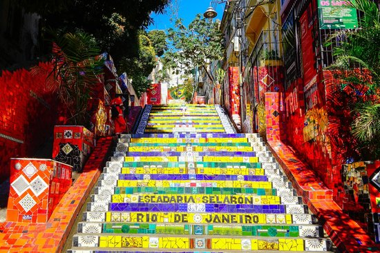
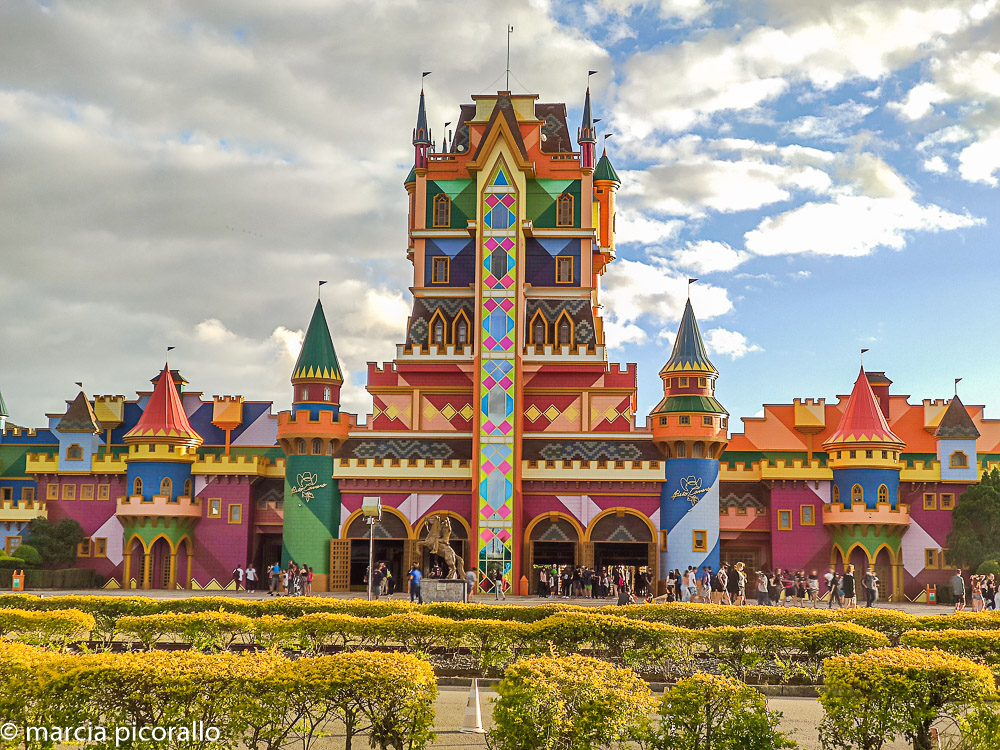

LUGARES PARA VISITAR NO BRASIL
Rio de Janeiro
Cristo Redentor

Cristo Redentor é uma estátua art déco que retrata Jesus Cristo, localizada no topo do morro do Corcovado, a 709 metros acima do nível do mar, com vista para parte considerável da cidade brasileira do Rio de Janeiro. Feito de concreto armado e pedra-sabão, tem trinta metros de altura (uma das maiores estátuas do mundo), sem contar os oito metros do pedestal. Seus braços se esticam por 28 metros de largura e a estrutura pesa 1145 toneladas.
Pão de Açucar

Monumento Natural dos Morros do Pão de Açúcar e da Urca é um complexo de morros localizado no bairro da Urca, na cidade do Rio de Janeiro, no Brasil. É composto pelo Morro do Pão de Açúcar (que dá nome ao complexo) e pelo Morro da Urca. Junto com a estátua do Cristo Redentor, é o maior cartão-postal da cidade do Rio de Janeiro e um dos mais famosos do Brasil. Pelas características únicas, margeado pelas águas da baía de Guanabara, constitui-se em uma referência turística internacional para a cidade.
Escadaria Selarón
A Escadaria Selarón é uma obra arquitetônica localizada entre os bairros de Santa Teresa e Lapa, no Rio de Janeiro, Brasil, decorada pelo artista chileno radicado no Brasil de longa data, Jorge Selarón, que declarou-a como uma "homenagem ao povo brasileiro".
Santa Catarina
Beto Carrero
Beto Carrero World é um parque temático localizado no litoral norte do estado de Santa Catarina, Brasil. Inaugurado no dia 28 de dezembro de 1991, pelo seu idealizador João Batista Sérgio Murad, artisticamente conhecido como Beto Carrero, o parque foi desenvolvido em uma área de 14 quilômetros quadrados.
Ilha do Arvoredo

A Ilha do Arvoredo é uma reserva biológica muito procurada para mergulho atualmente. O encontro de climas e correntes de ar faz da ilha um ambiente especialmente rico em espécies marinhas, proporcionando verdadeiro encanto para mergulhadores. Além da fauna, a flora também é rica e muito diversificada - simplesmente o lugar ideal para amantes da natureza.
Praia de Laranjeiras

Laranjeiras é a praia preferida de muitas pessoas quando vão a Balneário Camboriú. Isso porque, além de outros fatores, ela fica próxima de diversos restaurantes e, assim, todo mundo pode escolher uma opção que encaixe no bolso. Sua faixa de areia é pequena, mas fica abarrotada de gente no pouco espaço que tem. A água esverdeada, limpa e com poucas ondas faz Laranjeiras ganhar espaço no coração dos turistas.
Boa viagem

Espero que tenham gostado das minhas dicas.